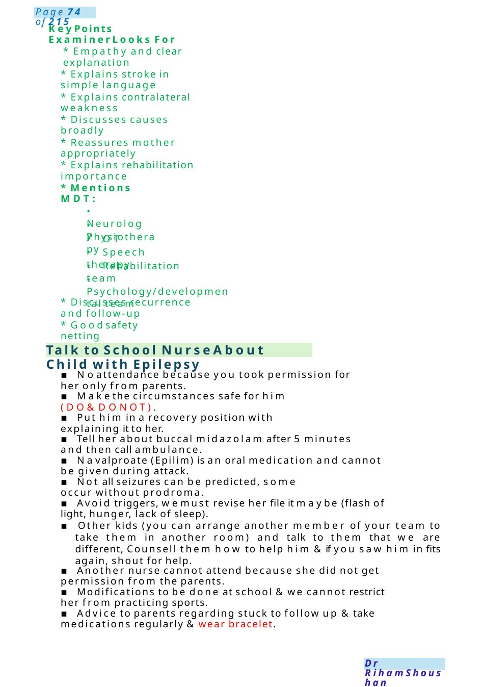
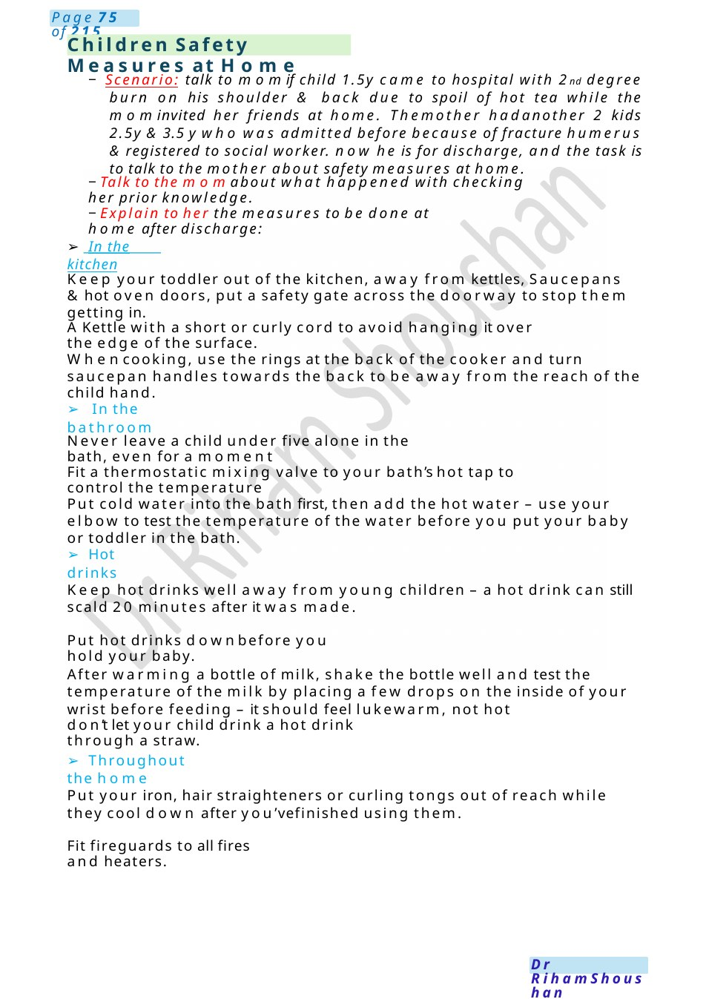

Talk to School Nurse About Child with Epilepsy
* Explains stroke in simple language * Explains contralateral weakness
Scenario Summary
* Explains stroke in simple language * Explains contralateral weakness
Full Original Scenario

Talk to School Nurse About Child with Epilepsy
Key Points Examiner Looks For
- Empathy and clear explanation
- Explains stroke in simple language
- Explains contralateral weakness
- Discusses causes broadly
- Reassures mother appropriately
- Explains rehabilitation importance
- Mentions MDT:
- Neurology
- Physiotherapy
- OT
- Speech therapy
- Rehabilitation team
- Psychology/developmental team
- Discusses recurrence and follow-up
- Goodsafety netting
▪ Noattendance because you took permission for her only from parents.
▪ Makethe circumstances safe for him (DO&DONOT).
▪ Put him in a recovery position with explaining it to her.
▪ Tell her about buccal midazolam after 5 minutes and then call ambulance.
▪ Navalproate (Epilim) is an oral medication and cannot be given during attack.
▪ Not all seizures can be predicted, some occur without prodroma.
▪ Avoid triggers, wemust revise her file it maybe (flash of light, hunger, lack of sleep).
▪ Other kids (you can arrange another member of your team to take them in another room) and talk to them that we are different, Counsell them how to help him &if you saw him in fits again, shout for help.
▪ Another nurse cannot attend because she did not get permission from the parents.
▪ Modifications to be done at school &we cannot restrict her from practicing sports.
▪ Advice to parents regarding stuck to follow up &take medications regularly &wear bracelet.

Children Safety Measures at Home
− Scenario: talk to momif child 1.5y came to hospital with 2nd degree burn on his shoulder & back due to spoil of hot tea while the mominvited her friends at home. Themother hadanother 2 kids 2.5y &3.5 y who was admitted before because of fracture humerus ®istered to social worker. now he is for discharge, and the task is to talk to the mother about safety measures at home.
−Talk to the momabout what happened with checking her prior knowledge.
−Explain to her the measures to be done at home after discharge:
- In the kitchen
Keep your toddler out of the kitchen, away from kettles, Saucepans &hot oven doors, put a safety gate across the doorway to stop them getting in.
AKettle with a short or curly cord to avoid hanging it over the edge of the surface.
Whencooking, use the rings at the back of the cooker and turn saucepan handles towards the back to be away from the reach of the child hand.
- In the bathroom
Never leave a child under five alone in the bath, even for a moment
Fit a thermostatic mixing valve to your bath’s hot tap to control the temperature
Put cold water into the bath first, then add the hot water – use your elbow to test the temperature of the water before you put your baby or toddler in the bath.
- Hot drinks
Keep hot drinks well away from young children – a hot drink can still scald 20 minutes after it was made.
Put hot drinks downbefore you hold your baby.
After warming a bottle of milk, shake the bottle well and test the temperature of the milk by placing a few drops on the inside of your wrist before feeding – it should feel lukewarm, not hot
don’t let your child drink a hot drink through a straw.
- Throughout the home
Put your iron, hair straighteners or curling tongs out of reach while they cool down after you’vefinished using them.
Fit fireguards to all fires and heaters.